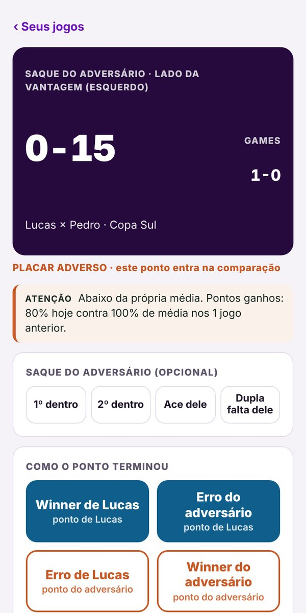
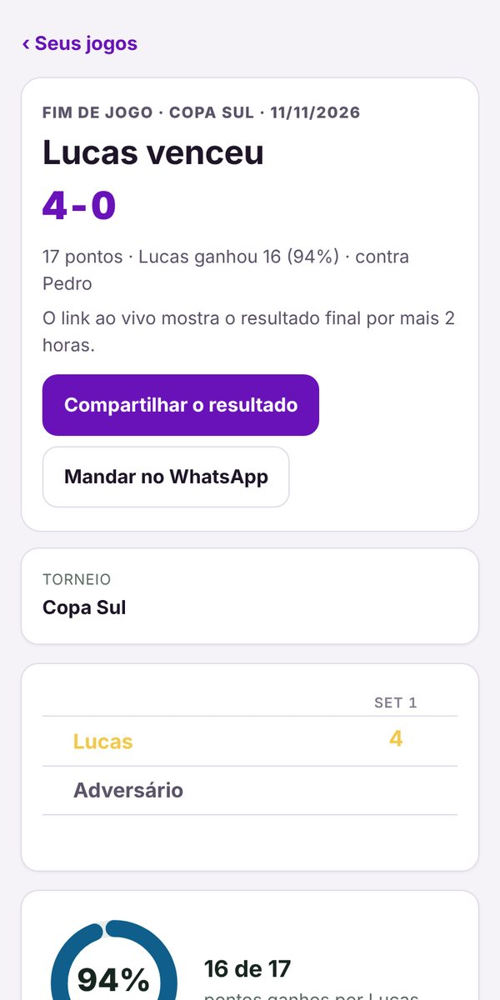
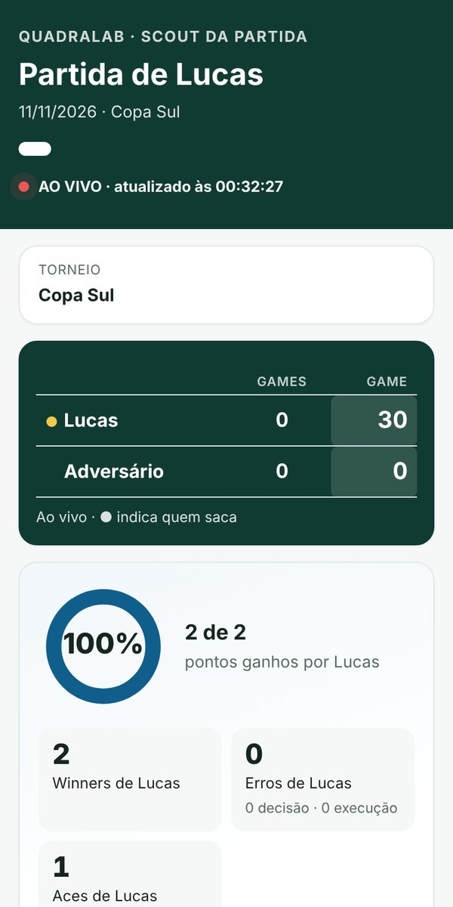
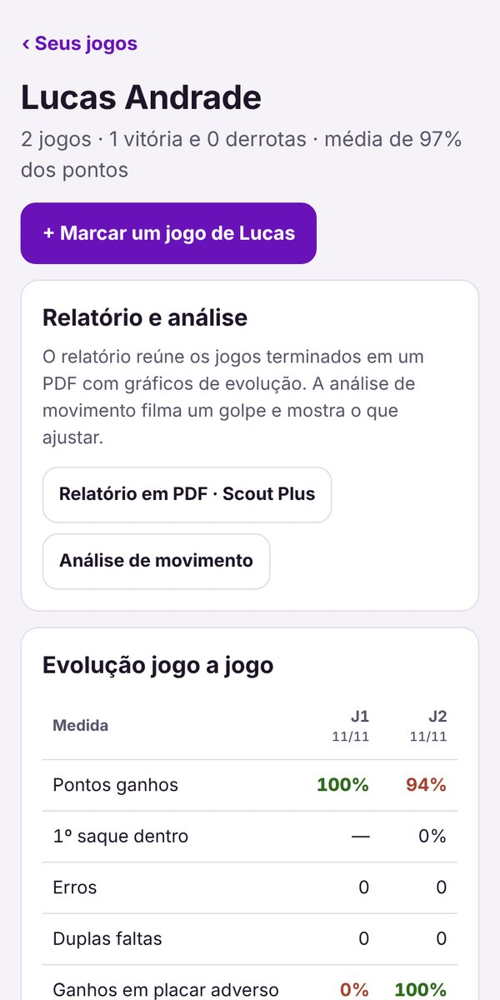

Para quem acompanha tênis de perto
Cada ponto do jogo, na palma da mão.
Marque o jogo ponto a ponto no celular. A família acompanha o placar ao vivo, de onde estiver, e no fim você tem os números do jogo e a evolução do atleta.

Como funciona
Do primeiro saque ao relatório, sem complicação.
- Escolha o atleta e o formatoMelhor de 3 sets, set único, tie-break, sem vantagem. Leva menos de um minuto.
- Toque em cada pontoComo o ponto terminou e em que bola. O placar, o saque e o lado da quadra o app faz sozinho.
- Veja o que o jogo mostrouPontos ganhos, erros, saque, placar adverso e a comparação com os jogos anteriores.
Marcação
Dois toques por ponto. Sem precisar ser técnico.
Botões grandes, pensados para a arquibancada. Os detalhes (golpe, direção, zona da quadra, decisão) são opcionais: marque quando quiser mais profundidade.
- Azul: ponto do atleta. Laranja: ponto do adversário.
- Ace e dupla falta em um toque. Errou? É só desfazer.
- Sem sinal no clube, continua marcando. Sincroniza quando a internet volta.

Ao vivo para a família · Scout Plus
Quem não foi ao torneio acompanha cada ponto.
Um toque abre o link ao vivo e manda no WhatsApp. Avós, pai, mãe ou treinador veem o placar e os números atualizando a cada ponto.
- Só o primeiro nome do atleta. O nome do adversário e as anotações nunca vão para o link.
- Você encerra o link quando quiser.

Evolução
Um jogo é uma amostra. Vários jogos mostram o caminho.
Cada atleta tem a sua página, com vitórias, média de pontos ganhos e a comparação jogo a jogo: o que melhorou, o que piorou e onde está o padrão.
- Relatório dos jogos em PDF, para levar ao treinador (Scout Plus).
- Avaliação mental de 1 a 5: como o atleta chega, joga e termina.

Para quem é
Feito para quem está na beira da quadra.
Pai, mãe ou responsável
Acompanhe o filho nos torneios com dados de verdade, não só com a impressão do dia.
Atleta
Marque seus jogos ou os de colegas, veja os seus números e leve o relatório para o treinador.
Treinador
Marque vários alunos no mesmo torneio e acompanhe a evolução de cada um.
Quanto custa
Comece grátis. O Plus abre em breve.
Grátis
R$ 0
- Até 3 atletas na conta
- Marcar jogos sem limite, com o tempo de cada partida
- Evolução completa, jogo a jogo
- Resultado para compartilhar no WhatsApp
- Jogos na nuvem, em vários celulares
Scout Plus
Em breve
- Tudo do grátis
- Link ao vivo para a família, a cada ponto
- Relatório em PDF de cada jogo e de todos os jogos
- Atletas sem limite
Perguntas
Dúvidas comuns
Preciso entender de tênis para marcar?
Não. Em cada ponto você só diz quem ganhou e como terminou (winner ou erro) e em que bola. O placar, o saque e o lado da quadra o app faz sozinho.
Funciona sem internet?
Sim. Depois do primeiro acesso, o app abre e marca sem sinal. Os jogos vão para a sua conta quando a internet volta. O link ao vivo precisa de internet para atualizar.
O nome do adversário aparece para a família?
Não. O link ao vivo (Scout Plus) e o texto do WhatsApp mostram só o primeiro nome do atleta, o placar e os números. O nome do adversário e as anotações ficam só na sua conta.
Posso usar em mais de um celular?
Sim. Entre com a mesma conta e os jogos aparecem nos dois. Pai e mãe podem acompanhar o mesmo atleta.
Quantos atletas posso acompanhar?
No grátis, até 3 atletas por conta, com jogos sem limite e evolução completa. No Scout Plus, atletas sem limite, link ao vivo e relatório em PDF.
Já tenho conta no QuadraLab. Preciso criar outra?
Não. Quem tem conta no QuadraLab (Player, Competição ou Treinador) entra com o mesmo e-mail e senha.
O próximo torneio já pode ser diferente.
Crie a conta grátis, marque o primeiro jogo e mande o resultado para a família.